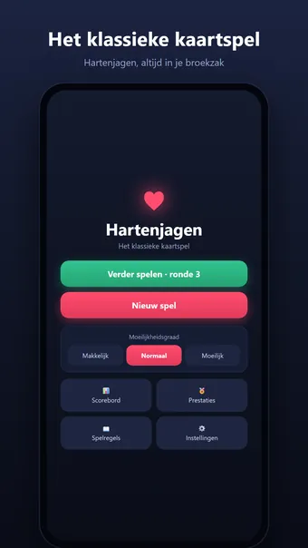
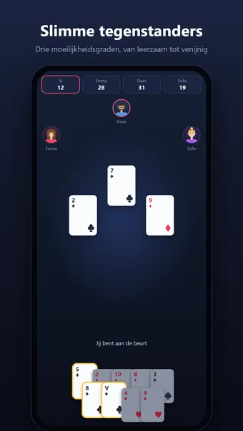
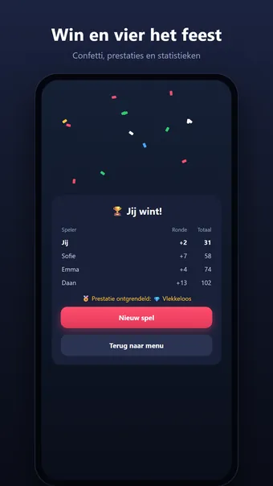
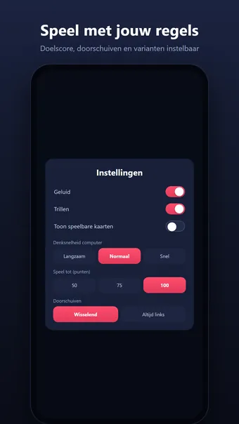

Over Hartenjagen
Speel Hartenjagen, het klassieke kaartspel — altijd en overal, gewoon offline. Jij tegen drie computerspelers: wie verzamelt de minste strafpunten?
Zo speel je
Elke hartenkaart in je slagen kost 1 punt, de schoppenvrouw maar liefst 13. Beken kleur, ontwijk de punten — of ga vol voor "de pit" en pak álle 26 strafpunten in één ronde, zodat je tegenstanders ze krijgen. Het potje eindigt zodra iemand de doelscore bereikt; de speler met de minste punten wint.
Nieuw met de regels? De ingebouwde tips leggen het spel stap voor stap uit terwijl je speelt.
Slimme tegenstanders
Drie moeilijkheidsgraden, van vriendelijk tot venijnig. Op Moeilijk telt de computer kaarten mee, bouwt hij renonces op en herkent hij het zelfs wanneer jij stiekem op de pit speelt.
Speel met jouw regels
- Doelscore instelbaar: 50, 75 of 100 punten
- Doorschuiven: wisselend, altijd links, altijd rechts of nooit
- Varianten: ruitenboer telt −10, schoppenvrouw breekt harten
- Pit-telling: +26 voor de rest of −26 voor de schutter
En verder
- Verdien 18 prestaties, van je eerste overwinning tot een vlekkeloos potje
- Uitgebreide statistieken: winreeksen, gemiddelde score en meer
- Pauzeer je potje en speel later verder, precies waar je was
- Geluid en trilfeedback (uit te zetten in de instellingen)
- Ook in landscape en op tablets
Gratis te spelen. De app toont advertenties, die je met één optionele aankoop kunt verwijderen; een account is niet nodig.
Veelgestelde vragen
Is Hartenjagen gratis?
Ja. Hartenjagen is gratis te downloaden en te spelen. De app toont advertenties, die je met één optionele aankoop in de app kunt verwijderen.
Werkt Hartenjagen offline?
Ja. Hartenjagen werkt zonder internetverbinding, dus je speelt ook in het vliegtuig, in de trein of overal zonder wifi.
Heb ik een account nodig om Hartenjagen te spelen?
Nee. Je hoeft je niet te registreren of in te loggen: open de app en speel. Je spellen en instellingen blijven op je eigen toestel.
Hoe speel je Hartenjagen?
Elke hartenkaart in je slagen kost 1 punt, de schoppenvrouw maar liefst 13. Beken kleur, ontwijk de punten — of ga vol voor "de pit" en pak álle 26 strafpunten in één ronde, zodat je tegenstanders ze krijgen. Het potje eindigt zodra iemand de doelscore bereikt; de speler met de minste punten wint. Nieuw met de regels? De ingebouwde tips leggen het spel stap voor stap uit terwijl je speelt.
Waar kan ik Hartenjagen downloaden?
Hartenjagen is voor Android-telefoons en -tablets te downloaden via Google Play. Gebruik de knop bovenaan deze pagina.
Meer spellen die je leuk vindt
Sudoku
De klassieke sudoku. Oneindig veel puzzels, elke dag een nieuwe uitdaging.
Google PlayMijnenveger
De klassieke mijnenveger. Oneindig veel velden, elke dag een nieuwe uitdaging.
Google Play30 Seconds
Beschrijf 5 woorden in 30 seconden! Een vrolijk woordspel voor je vrienden.
Google PlayJuridisch
Hieronder vind je de juridische documenten die voor Hartenjagen gelden.
Contact
Vragen, feedback of een privacyverzoek? Mail naar joostmuijsenberg.dev@gmail.com.